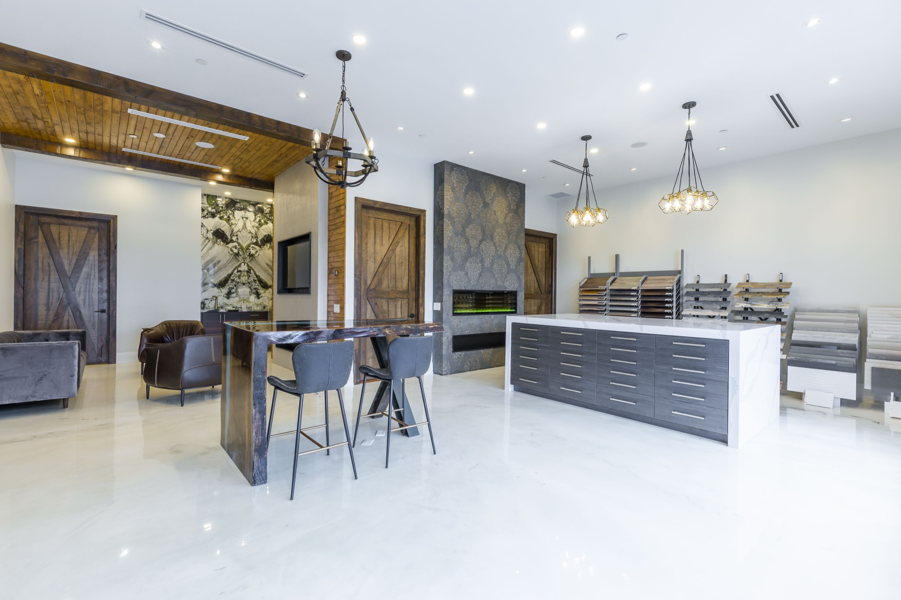
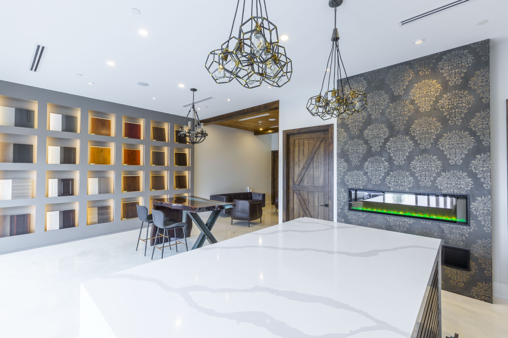
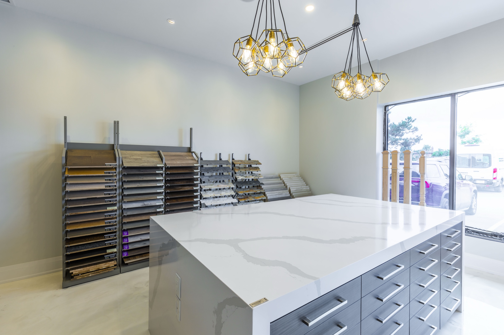

See combinations in real light.
Wood, stone, fronts, profiles, hardware, and light behave differently together than they do as isolated samples on a screen.
Mariani Kitchen Studio · Woodbridge
At the Woodbridge showroom, compare fronts, surfaces, hardware, and cabinet interiors at full scale with people who understand design, production, and installation.
Plan a studio conversation
A showroom visit is most useful when it is connected to a real room. Bring photographs, plans if you have them, saved references, and the questions that keep returning. The studio helps turn those signals into a clearer direction.
Wood, stone, fronts, profiles, hardware, and light behave differently together than they do as isolated samples on a screen.
Open the storage, feel the handles and movement, and compare how visible and hidden systems change the daily experience.
The conversation can include cabinetry, installation, appliances, lighting, and the surrounding renovation instead of stopping at a finish selection.


Bring what you know
Photographs of the current room and the kitchens you saved are enough to begin deciding what should change.